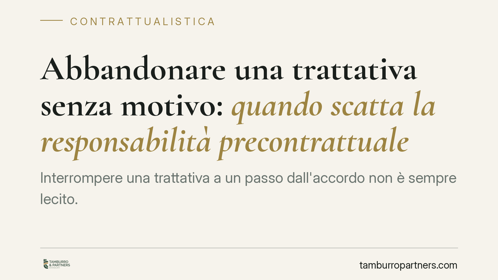

Abbandonare una trattativa senza motivo: quando scatta la responsabilità precontrattuale
Interrompere una trattativa a un passo dall'accordo non è sempre lecito. Una recente pronuncia del Tribunale di Salerno ribadisce che la responsabilità precontrattuale può colpire chi si sottrae senza motivo dopo aver ingenerato affidamento. Il tema riguarda ogni impresa che negozia contratti: capire i confini della libertà di recesso dalle trattative significa evitare esposizioni risarcitorie inattese.

Il caso e il principio affermato
La libertà di condurre e interrompere una trattativa è un principio cardine dell'autonomia negoziale: nessuno è obbligato a concludere un contratto. Questa libertà, però, non è illimitata. Il Tribunale di Salerno è tornato sul punto, chiarendo che la responsabilità precontrattuale prevista dagli articoli 1337 e 1338 del Codice civile può operare non solo nella fase delle trattative in senso stretto, ma anche in momenti successivi, quando una parte ha già ingenerato nell'altra un ragionevole affidamento sulla conclusione dell'accordo.
In sostanza: chi abbandona il tavolo negoziale in modo ingiustificato, dopo aver alimentato l'aspettativa della controparte, può essere chiamato a rispondere del danno provocato.
Inquadramento normativo
L'articolo 1337 del Codice civile impone alle parti, "nello svolgimento delle trattative e nella formazione del contratto", di comportarsi "secondo buona fede". È una regola di condotta, non un obbligo di contrarre: obbliga a un comportamento leale, trasparente e coerente durante il negoziato.
L'articolo 1338 aggiunge che la parte che conosce (o dovrebbe conoscere) una causa di invalidità del contratto, e non ne dà notizia all'altra, risponde del danno subito da chi ha confidato senza colpa nella validità dell'accordo.
La violazione di questi doveri genera la cosiddetta responsabilità precontrattuale (o *culpa in contrahendo*). Il presupposto non è la conclusione di un contratto, ma la lesione dell'affidamento leale. Per la giurisprudenza consolidata occorrono tre elementi: una trattativa giunta a uno stadio avanzato; un ragionevole affidamento sulla conclusione; l'interruzione senza giustificato motivo.
Cosa si può risarcire (e cosa no)
Qui sta il punto più delicato, spesso frainteso. Il danno risarcibile in caso di responsabilità precontrattuale è limitato al cosiddetto interesse negativo. Comprende due voci:
- Le spese sostenute inutilmente in vista della conclusione del contratto (consulenze, sopralluoghi, progettazioni, spese di viaggio o istruttorie);
- La perdita di occasioni alternative, ossia le altre opportunità di affari che la parte ha rifiutato o trascurato confidando in quella trattativa.
Non è invece risarcibile il cosiddetto interesse positivo, cioè il guadagno che si sarebbe ottenuto se il contratto fosse stato concluso ed eseguito. La ragione è coerente: poiché nessuno era obbligato a stipulare, non si può pretendere il profitto derivante da un contratto mai nato. Si risarcisce l'affidamento tradito, non l'affare mancato.
Implicazioni pratiche per le imprese
Per chi negozia contratti — fornitori, appaltatori, partner commerciali — la lezione è duplice.
Da un lato, non basta invocare la libertà di recesso dalle trattative per mettersi al riparo: se la controparte ha investito risorse su un affidamento che voi avete alimentato, la rottura ingiustificata può costare cara.
Dall'altro, chi subisce l'abbandono deve essere consapevole del perimetro reale della tutela: potrà recuperare spese e occasioni perse, se le documenta, ma non il profitto sperato. La prova del danno resta a carico di chi lo lamenta, ed è spesso il vero terreno del contenzioso.
La distinzione tra trattativa che può ancora legittimamente sfumare e trattativa che ha superato la "soglia dell'affidamento" è valutazione di fatto, rimessa al giudice. Per questo la documentazione del negoziato diventa decisiva.
Cosa fare in concreto
- Tracciate le trattative per iscritto. Conservate email, minute di incontro e bozze: sono la prova dello stato di avanzamento e dell'affidamento generato.
- Formalizzate le riserve. Se non intendete vincolarvi finché non è tutto definito, dichiaratelo con clausole del tipo "salvo approvazione" o lettere di intenti non impegnative.
- Documentate spese e occasioni alternative. Se investite risorse in vista di un contratto, tenetene evidenza: è ciò che potrete far valere in caso di rottura ingiustificata.
- Motivate per iscritto l'eventuale recesso. Un motivo oggettivo e comunicato riduce sensibilmente il rischio di essere ritenuti in mala fede.
- Valutate una consulenza prima di interrompere trattative avanzate. In presenza di un investimento rilevante della controparte, consigliamo di verificare l'esposizione prima di lasciare il tavolo.
La buona fede precontrattuale non limita la libertà negoziale: la disciplina. Chi la rispetta negozia con serenità; chi la ignora può trovarsi a rispondere di un affare che non ha nemmeno concluso.
---
*Contributo informativo a cura di Tamburro & Partners - Avv. Giuseppe Tamburro. Non costituisce parere legale.*
Ogni contratto ha il suo equilibrio.
Se vuoi una revisione delle clausole o una redazione su misura, scrivi allo studio. Ti rispondiamo entro un giorno lavorativo.